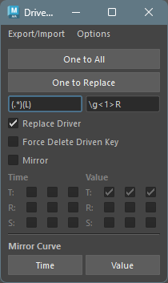
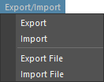
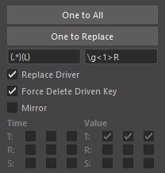
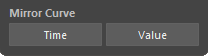
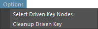

Driven Key Tools
概要
セットドリブンキーの編集を補助するツールです。
セットドリブンキーに対して主に以下の機能を提供します。
- 保存と読み込み
- コピーとペースト
- アニメーションカーブのミラー
- いくつかのユーティリティー機能
起動方法
専用のメニューか、以下のコマンドでツールを起動します。
import faketools.tools.rig.drivenkey_tools_ui
faketools.tools.rig.drivenkey_tools_ui.show_ui()
セットドリブンキーの保存と読み込み
セットドリブンキーのファイルへの保存、また、保存したファイルからの再現を行います。

セットドリブンキーのファイルへの保存を行うには、以下の手順を行います。
セットドリブンキーが設定されたノードを選択します ( 複数選択可 )。
Export/ImportメニューのExportかExport Fileを選択します。Exportは、TEMP フォルダに保存します。Export Fileは、保存先を選択します。
セットドリブンキーのファイルを読み込むには、以下の手順を行います。
Export/ImportメニューのImportかImport Fileを選択します。Importは、TEMP フォルダから読み込みます。Import Fileは、読み込むファイルを選択します。
- ファイルに保存されたセットドリブンキーが再現され、適応先のノードが選択されます。
セットドリブンキーのコピーとペースト
セットドリブンキーのコピーとペーストを行います。
One to All と One to
Replace の二つの方法があります。

One to All ( 一つから全てへ )
一つのノードのセットドリブンキーを、複数のノードにコピーします。
コピーするには、以下の手順を行います。
- コピー元のノードを選択します。
- コピー先のノードを追加選択します ( 複数選択可 )。
One to Allボタンを押します。
One to Replace ( 置換後のノードへ )
一つのノードのセットドリブンキーを、そのノード名を置換したノードをシーンから検索してコピーします。
ノード名の置換には、One to Replace
ボタン下のフィールドを使用します。 ( python
の正規表現で置換されます。 )
コピーするには、以下の手順を行います。
- コピー元のノードを選択します ( 複数選択可 )。
One to Replaceボタンを押します。置換後のノードがシーンから検索され、コピーされます。
- Replace Driver
- ドライバーのノード名も置換したものを使用します。
- Force Delete Driven Key
- 置換後のノードに既にセットドリブンキーが設定されている場合、適応するドリブンキー以外もすべて削除し、コピーします。
- Mirror
- 置換後のノードに対して、T ( Translate ) R ( Rotate ) S ( Scale ) のアニメーションカーブを Time か Value 方向にミラーします。
アニメーションカーブのミラー
アニメーションカーブのミラーを行います。

ミラーを行うには、以下の手順を行います。
- ミラーを行いたいドリブンキーアニメーションカーブを選択します ( 複数選択可 )。
TimeかValueボタンを押します。Timeボタンを押すと、アニメーションカーブの時間方向にミラーします。Valueボタンを押すと、アニメーションカーブの値方向にミラーします。
オプションメニュー
いくつかの追加機能があります。

- Select Driven Key Nodes
- セットドリブンキーが設定されたノードを選択します。
- 既にノードがシーン上で選択されている場合、そのノード内のセットドリブンキーが設定されたノードを選択します。
- 何も選択されていない場合、シーン上のすべてのノード内のセットドリブンキーが設定されたノードを選択します。
- セットドリブンキーが設定されたノードを選択します。
- Cleanup Driven Key
- セットドリブンキーが設定されているノードをクリーンアップします。以下の状況を整理します。
- ドライバーが存在しないドリブンキーを削除します。
- 値がすべて同じであり、またタンジェントの値がすべて 0.0 であるドリブンキーを削除します。
- 以上の条件を満たし、削除した後に blendWeighted ノードに animCurve が接続されていないかひとつだけ接続されている場合は、その blendWeighted ノードを削除します。
- とにかくきれいにします。
- セットドリブンキーが設定されているノードをクリーンアップします。以下の状況を整理します。